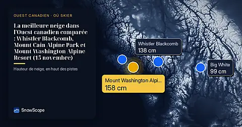
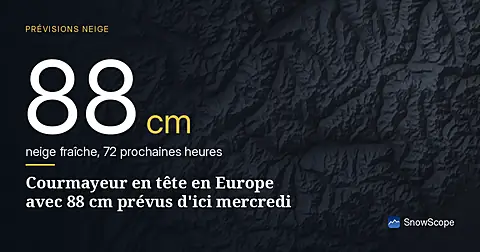
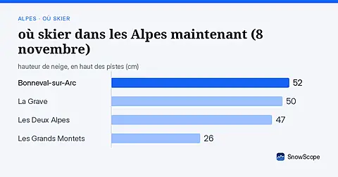
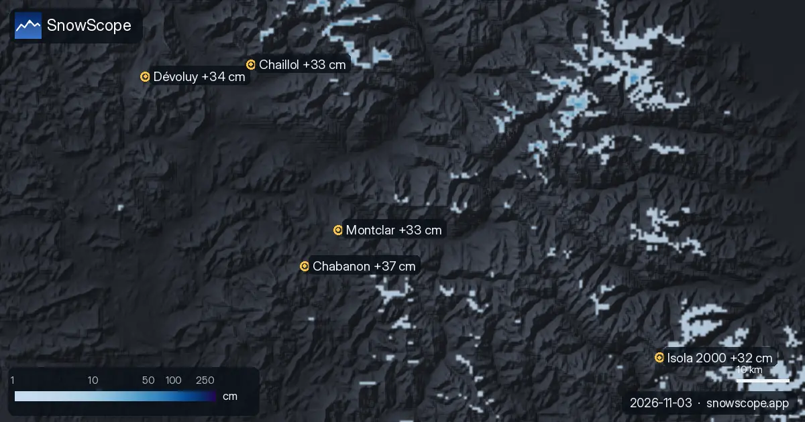

Bulletins neige · Limite pluie-neige
Des bulletins neige quotidiens pour les skieurs : où est la neige, ce qui arrive et où skier, d'après la carte de neige SnowScope et les stations de mesure. Chaque chiffre vient des données du jour.

Les Pyrénées verront 91 cm de neige nouvelle en 14 jours, avec moitié tombant en semaine 1. Les pentes hautes au-dessus de 2 500 m en reçoivent le plus. Prévision du 2026-11-18.

Combien de neige les montagnes vont-elles gagner ? Notre tableau montre les stations où la prévision annonce le plus de neige fraîche dans les 24 …

Prévisions Canada occidental : 90 cm de neige nouvelle à Mount Washington au cours des deux prochaines semaines, avec 70 cm attendus fin novembre et début décembre. Modèle du 18-11-2026.

Les Pyrénées verront jusqu'à 63 cm de neige nouvelle dans les 14 prochains jours, avec 70 % tombant la première semaine. Meilleure neige attendue au-dessus de 2 000 m.

Prévisions de neige fraîche pour les Alpes jusqu'à début décembre. Saint François Longchamp en tête avec 228 cm attendus sur 14 jours, en commençant par 35 cm jeudi.

Bulletin neige dans les Alpes, 18 novembre. Nous avons pesé la neige déjà au sol, la neige fraîche des 72 dernières heures et ce qu'ajoute la …

Aucune nouvelle neige prévue à Jbel Hebri ou Oukaïmeden dans les 14 prochains jours. Les montagnes de l'Atlas restent sans neige alors que novembre progresse.

Le classement du jour : le plus de neige fraîche prévue dans les 24 prochaines heures et jusqu'au 21 novembre, en Europe, au Maroc et en Amérique du …


96 cm de neige nouvelle prévus aux Arcs sur les trois prochains jours, avec aujourd'hui apportant les chutes les plus importantes ; simulation du 16 novembre.

Orelle a atteint 31 cm le 16 novembre, en hausse de 17 cm en une semaine. Les Alpes devraient recevoir jusqu'à 103 cm de neige supplémentaire d'ici le 19 novembre.

La zone blanche sur la carte est passée de 258 160 km² (13 novembre) à 253 880 km² aujourd'hui, et la prévision dit 298 900 km² le 18 novembre. Trois …

Prévision de 79 cm de neige nouvelle aux Grands Montets du 16–18 novembre, principalement au-dessus de 2 000 m d'altitude, selon le modèle de prévision du 15 novembre.

À Andermatt (2963 m), la prévision donne 75 mm de précipitations du 15 novembre au 20 novembre. Pendant les heures humides, l'isotherme 0 °C se situe

Courmayeur en tête du pronostic avec 88 cm en 72 heures ; l'épaisseur de neige atteint 142 % de la normale pour mi-novembre selon les données du 15 novembre.


Revelstoke, prévisions neige : jusqu'à 10–21 cm attendus d'ici le 16 novembre (Ouest canadien). À Whistler Blackcomb, l'isotherme 0 °C monte entre …

Dévoluy, tendance neige : jusqu'à 24–32 cm possibles d'ici le 16 novembre (Alpes). D'ici le 16 novembre, notre prévision donne 35 cm à Orcières …

Nos choix sont La Grave, Pfelders et Les Deux Alpes : nous avons regardé la hauteur de neige du jour, la neige fraîche des 72 dernières heures et la …

Notre modèle de neige prévoit que Whistler Blackcomb recevra 88 cm de neige fraîche d'ici le lundi 16 novembre 2026, dominant les stations mondiales.

Entre 1 380 m et 3 410 m : c'est là que notre prévision place l'isotherme 0 °C dans l'Ouest canadien ces prochains jours. Aux heures les plus douces, …

Les cartes du jour regardent deux semaines devant dans les Pyrénées, du 13 novembre au 26 novembre. Elles viennent de les deux modèles mondiaux qui …

Saint François Longchamp n'a que 3 cm de neige, soit 12 % de l'enneigement habituel à cette époque, mais 110 cm sont prévus au cours des deux prochaines semaines.

Voici les nouvelles cartes des deux prochaines semaines dans l'Atlas (Maroc), du 13 novembre au 26 novembre : la neige fraîche attendue sur le …

Bulletin neige dans les Pyrénées, 12 novembre. D'ici le 15 novembre, la prévision apporte 33 cm à Cauterets Cirque du Lys, 29 cm à Piau-Engaly et …

Les Deux Alpes, prévisions neige comparées à la région : 51 cm d'ici le 14 novembre. La surface enneigée est passée de 45 820 km² le 9 novembre à …

Les pentes hautes de Dent de Vaulion font face à la pluie avec le niveau de congélation atteignant 2 800 m jeudi ; les stations d'altitude reçoivent de la neige fraîche pour le week-end.

Nous avons pesé la neige déjà au sol, la neige fraîche des 72 dernières heures et ce qu'ajoute la prévision, et retenu Whistler Blackcomb, Tweedsmuir …

La Grave domine les Alpes avec 52 cm prévus en 24 heures au 11 novembre ; la neige précoce arrive des semaines avant l'accumulation maximale.

Whistler Blackcomb a reçu 75 cm de neige nouvelle au sommet en une semaine, puis une tempête douce avec 124 mm d'eau. Un guide simple sur la sous-couche, la neige fraîche, la pluie et la croûte.

Piau-Engaly domine la prévision avec 37 cm de neige fraîche d'ici le 13 novembre ; 24 cm sont attendus le 12 novembre.

Chaque jour, nous listons les stations qui devraient recevoir le plus de neige fraîche, dans les 24 prochaines heures et jusqu'au 13 novembre, en …


50 cm en haut du domaine : voilà pourquoi La Grave est en tête de notre liste. Nous avons combiné la hauteur de neige du jour, la neige fraîche des …

Whistler Blackcomb a gagné 24 cm en une semaine pour atteindre 50 cm total ; 62 cm supplémentaires prévus en 72 heures alors que des tempêtes majeures frappent les montagnes (données du 8 novembre).


Une tempête du Pacifique humide : 92 cm de neige fraîche sur les pistes hautes de Whistler du 8 au 10 novembre, pluie en dessous d'environ 1 620 m.

Air doux pour les prochaines pluies et chutes de neige : la limite pluie-neige se situe surtout entre 2 190 et 2 850 m. Carte, graphique et animation.

Limite pluie-neige proche de 3 710 m du 8 au 12 novembre : pluie à Oukaïmeden et Imlil, neige au sommet du Toubkal. Carte et graphique.

D'ici le 10 novembre, notre prévision donne 103 cm à Whistler Blackcomb, 99 cm à Ski Callaghan et 74 cm à Mount Cain Alpine Park. Les chiffres des …

Environ 65 mm sur le Toubkal d'ici le 12 novembre, mais l'isotherme 0 °C reste vers 4 000 m : pluie à Oukaïmeden et dans les vallées, neige au sommet seulement.

Orcières Merlette mène les prévisions des Alpes avec 36 cm de neige nouvelle en trois jours, principalement les 9–10 novembre, selon les données du 7 novembre.

Le tableau du jour classe les stations d'Europe, du Maroc et d'Amérique du Nord selon la neige fraîche prévue dans les 24 prochaines heures et …

Ski Eldorado prévoit 11 cm de neige fraîche, mais l'isozéro atteint 3 460 m le 6 novembre, retardant l'arrivée de la neige au Nord-Est.

D'ici le 9 novembre, notre prévision donne 74 cm à Whistler Blackcomb, 63 cm à Ski Callaghan et 50 cm à Mount Cain Alpine Park. Les chiffres des …

Nous avons combiné la hauteur de neige du jour, la neige fraîche des 72 dernières heures et la prévision pour retenir Isola 2000, Artesina et …

Prévision Whistler Blackcomb : 74 cm en 72 heures ; les semaines 13, 12, 11 apportent les neiges les plus abondantes de l'année historiquement. Prévision du 5 novembre.
D'ici le 8 novembre, notre prévision donne 94 cm à Whistler Blackcomb, 93 cm à Ski Callaghan et 70 cm à Tweedsmuir Ski Club. Les chiffres des …

Whistler Blackcomb affiche 27 cm le 5 novembre, soit seulement 41 % de la normale pour cette date. Un système majeur apporte 22 cm de neige dans les 24 prochaines heures.

D'ici le 6 novembre, notre prévision donne 37 cm à Chabanon, 34 cm à Dévoluy et 33 cm à Chaillol. Les chiffres des stations de ski sont des …

Chaque jour, nous listons les stations qui devraient recevoir le plus de neige fraîche, dans les 24 prochaines heures et jusqu'au 6 novembre, en …